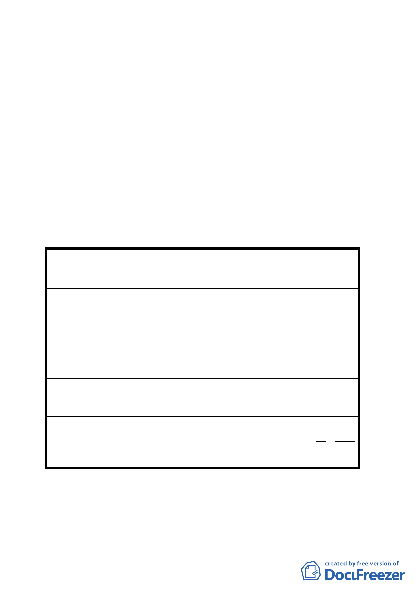

三、 配合未來土地使用計畫變更工業用地為機關用地（供刑
事警察局、財政部財稅資料處理中心使用）。
四、 配合決議二、三、修正內容，本案案名應一併配合修正。
五、 針對國父紀念館範圍內部分私有土地，為管用合一，於
都市計畫說明書增列「事業及財務計畫」，並註明由國
父紀念館館方編列預算徵收。
六、 公民或團體所提意見委員會決議詳如綜理表。
臺北市都市計畫委員會公民團體陳情意見綜理表
變更臺北市國父紀念館周圍特定專用區用地為特定
案 名 住宅區、工業用地為第三種工業區及修訂土地使用
分區管制規定計畫案
高泉亮先生（臺北市仁愛路四段 442
編
號１
陳情人
號）
江燦輝先生（臺北市光復南路 262 號 6
樓之 3）
陳情理由
臨仁愛路（60 公尺），容積考慮放寬，且高度放寬至 50 公
尺。
建 議 辦 法 儘速通過。
專案小組審
查結論
對於國父紀念館週邊建築高度（含屋突）建議回歸土地使
用分區管制內容之規定，以 60 公尺為原則；至於容積則依
原計畫案辦理。
修正專案小組審查結論為：國父紀念館周邊建築物總高度
委 員 會 議 （含屋突）回歸土地使用分區管制內容之規定，並以不超
決 議 過 60 公尺為原則；至於建築天際線的管制則由都市設計審
議委員會依專業權責予以審核。
五